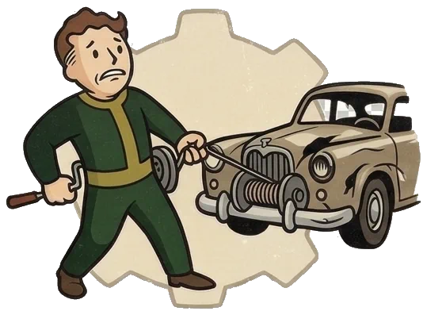
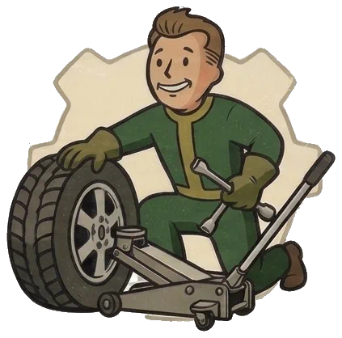
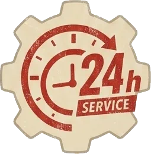
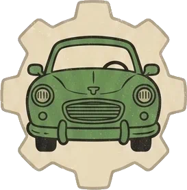

車検・整備・カスタムから、レッカー・ロードサービスまで。「こんなこと頼める？」も、まずは気軽にひと声。故障やトラブルは24時間対応、代車・レンタカーもご用意しています。
出先・遠方でのトラブルも、代車を載せて駆けつけます。旅行も中断することなく、そのまま楽しんでいただけます。
旅行中や遠出の途中で車が動かなくなっても、まずは落ち着いてご連絡を。
お電話一本で状況をお聞きし、すぐに手配します。
積載車に代車を載せて、トラブルの現場までお届けにあがります。
故障車はそのままお預かり。旅程を止めずに、そのままお楽しみいただけます。
車・バイクの突然のトラブルも、24時間対応で駆けつけます。まずはお気軽にご連絡ください。

故障・事故レッカー
タイヤのパンク車のことならひと通りお任せください。「これってお願いできる？」も大歓迎です。

急な故障やトラブルも24時間対応。レッカー・ロードサービス（任意保険対応可）で、動けなくなった車もすぐ駆けつけます。

修理や車検で車を預ける間も、代車・レンタカーをご用意。日常の足を止めずに安心してお任せいただけます。
「どこに頼めばいいか分からない」も大丈夫。車検・整備からカスタム・買取まで、まとめて相談できる地元の車屋です。
作業の様子や入庫車両、カスタム事例などを発信中。気になることはDMからお気軽にどうぞ。
@sakimoto_vehicleserv ／ 自動車関連サービス・長崎県諫早市
長崎県諫早市多良見町を拠点に、長崎県全域はもちろん、九州全域〜県外・遠方まで出張・レッカー対応。お気軽にご相談ください。
| 所在地 | 〒859-0401 長崎県諫早市多良見町化屋321-16 |
|---|---|
| 対応エリア | 長崎県全域対応（諫早市・長崎市・大村市・島原市・雲仙市・西海市・佐世保市・時津町・長与町 ほか） 九州全域〜県外・遠方もお気軽にご相談ください。 |
| 対応内容 | 車検・整備・カスタム・洗車磨きコーティング 新車中古車販売・買取・レッカー・ロードサービス 事故車修理・塗装・へこみ・キズ修理 |
| 出張・レッカー | 故障・トラブル時は出張対応可。ロードサービスは任意保険対応可。 |
| 受付時間 | 9:00〜19:00（変更の場合あり） ／ 故障・トラブルは24時間対応 |